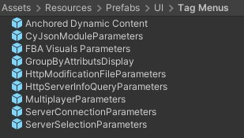

The User Interface (UI) of the project is in a state of "means to an end". It has been tweaked enough to work and it is not very well organized.
Interactions
Unity provides a solution to support Extended Reality development called XR Interaction Toolkit. From this package, we used the XRRig, InteractionManager, XRController (Action-Based), XRRayInteractor, XRGrabInteractable, and a few others to enable interaction and navigation in Dive Scenes via the XR controllers.
In ECellDive, every interaction with objects or UI menus is performed remotely thanks to rays that stems from the base of the controllers and extend for 30 units of distance in the virtual environment. The parameters of the rays are controlled by an XRRayInteractor component attached to the gameobject (GO) representing the ray. In the Player prefab (Assets/Resources/Prefabs/Player) search for the GOs named G Left Ray, RG Left Ray, or RI Left Ray to have examples. A ray interactor works in pair with an interactable in the scenes (e.g. XRGrabInteractable) via an interaction manager (i.e., the XRInteractionManager in the main scene). In ECellDive every module have an XRGrabInteractable and the 2D UI have a TrackedDeviceGraphicRaycaster. The XRRayInteractor and XRGrabInteractable offer a large range of parameters but we mostly don't use them. We only use the pair of components to use the interaction detection system implemented in the interaction manager and to bind to events related to this detection such as First/Last Hover (e.g. the XRGrabInteractable of CyJsonModule prefab at Assets/Resources/Prefabs/Modules/CyJsonModules). Then, we implemented our own subsystems such as a customized object movements with the GrabManager (in every modules), or a customized player teleportation and continuous movements in MovementManager (in MVT Left Container and MVT Right Container in the Player prefab).
We separated the inputs of ECellDive in three sets of action maps for the movements (teleportation & continuous), the ray-based interaction with UI and modules (grab & move, press button), the ray-based and volumetric interactions with modules to make custom groups. Users can switch cycle on them thanks to the component InputModeManager (in Controllers of the Player prefab). The component exposes access to two fields refLeftControlSwitch and refRightControlSwitch to specify which action will trigger the input mode cycle on the respective controller. In turn, the action are listening to buttons of the controllers. Hence, when the user press the corresponding button, the action is performed which leads to execution of LeftControllerModeSwitch or RightControllerModeSwitch. Those two methods respectively increment the leftControllerModeID and rightControllerModeID: the ray-based controls are associated with value 0, the movement controls with value 1, and the group controls with value 2. From 2, the value cycles to 0. leftControllerModeID and rightControllerModeID are network variables which changes trigger the network event OnValueChanged to which the methods ApplyLeftControllerActionMapSwitch, ApplyLeftControllerInteractorsSwitch, ApplyRightControllerActionMapSwitch and ApplyRightControllerInteractorsSwitch have respectively subscribed. Finally, in those methods, the action maps and interactors the previous leftControllerModeID or leftControllerModeID are deactivated while the ones of the new value are activated. Finally, the information tags of the buttons are updated to match the new input mode.
2D UI menus
All 2D UI panel menus are hand-made. Until this point during development, it has been more cost-efficient to duplicate already existing 2D UI items than to spend time making a procedural script that could generate some base menus. As a consequence there is quite a number of 2D UI items in the projects that resemble each other and have only been slightly modified.
In the UI folder
The UI menus are at the path Assets/Resources/UI.

- The
External Object Containeris the prefab holding the GUIManager that is mandatory for our the Main scene. Info Displayis an example of a 2D UI panel with aLineRendererthat can make a connection with another object to make them seem attached and related. That's what is used on the demonstration gameobject (GO)BaseModulefound atAssets/Resources/ModulesInfo Tagis a specialization ofInfo Displayto inform about the actions bound to the buttons of the XR controllers. It has the component InfoTagManager to control its content based on the current input mode of the controller.Picker 2.0 VRis color picker downloaded from the Unity Asset Store adapted to work in an XR scene.Picker 2.0 VR Holderis simply aPicker 2.0 VRencapsulated into a GO that can react to user's interaction to move it (GrabManager) and automatically rotate to be readable from the point of view of the user (FaceCamera). This one should probably be deleted and replaced with a compound scene GO made from thePicker 2.0 VRandUI Graphics Holder.Surge Info Tagis a specialized info tag with a surge and shrink animation. It is used on the left and right controllers to momentarily inform the users about the input mode they are switching to.UI Graphics Holderis a container prefab in which to put (as child) 2D UI panels that users can move and should automatically face the user to be readable.
In the UI/Elements folder
In this folder are some smaller 2D UI elements that are used to make bigger 2D UI menus.
Button Scroll Listis an vertical UI with a scroll bar in whichMenu Buttoncan be instantiated. It uses OptimizedVertScrollList to be able to display a lot of elements while limiting performance hit (but needs further improvements).Close Buttonis a small square cross button that can be use to suggest a way to close 2D UI menus or destroy modules.Drop Down Fieldis a button with a name and an arrow sign that switches orientation on button click to suggest that some content can be opened/closed.Drop Down Scroll Listis an vertical UI with a scroll bar in whichDrop Down Fieldcan be instantiated. It uses OptimizedVertScrollList to be able to display a lot of elements while limiting performance hit (but needs further improvements).Group Fieldis specialized to display groups in a list. It is a composition of aClose Button(to destroy the group), a toggle (to show/hide the group), a color button (triggers opening thePicker 2.0 VR Holderto chose the color of the group)Groups Scroll Listis an vertical UI with a scroll bar in whichGroup Fieldcan be instantiated. It uses OptimizedVertScrollList to be able to display a lot of elements while limiting performance hit (but needs further improvements).Menu Buttonis a basic button. Just added a UIHoverNamed Input Field&Named Input Field 2are a composition of a text mesh on the left and an input field on the right. The main difference is the appearance: they have different default values ofPixel Per Unit Multiplierin theImagecomponents.Position Handleis the prefab to the white horizontal bar handle that is present on almost every other 2D UI to allow user to move the 2D UI they are part of.Semantic Group Fieldis a specializedGroup Fieldto represent every groups that were grouped using a specific semantic.Semantics Groups Scroll Listis an vertical UI with a scroll bar in whichSemantic Group Fieldcan be instantiated. It uses OptimizedVertScrollList to be able to display a lot of elements while limiting performance hit (but needs further improvements).Slider Value Color Combois a composition of a name, a slider, a field to display the value,+and-button to slowly increment or decrement the value, and a color button to assign a color to this value. TwoSlider Value Color Comboare used to linearly map a range of values between colors.Slider Value Controlis a composition of a name, a slider, a field to display the value,+and-button to slowly increment or decrement the value. It is used to control numerical values.Toggle Fieldis a composition of a toggle on the left and a name on the right.Toggle Scroll Listis an vertical UI with a scroll bar in whichToggle Fieldcan be instantiated. It uses OptimizedVertScrollList to be able to display a lot of elements while limiting performance hit (but needs further improvements).
All scroll lists could certainly be refactored into one.
In the UI/Menu Elements
In this folder are 2D UI composed by elements found in UI/Elements.
Buttons Menuis a composition ofButton Scroll Listwith aPosition Handle, a name, aClose Buttonand a pin/unpin pair of buttons.Drop Down Menuis a composition ofDrop Down Scroll Listwith aPosition Handle, a name, aClose Buttonand a pin/unpin pair of buttons. Clicking aDrop Down Fieldin the scroll list will spawn aButtons Menuwith the content associated to the drop down.Groups Menuis a composition ofGroups Scroll Listwith aPosition Handle, a name, aClose Buttonand a pin/unpin pair of buttons.Log Menuis the menu where users can consult log messages. It is a composition of aButton Scroll List, a wide message space, toggles to control the visibility of the messages, aClose Buttonand a pin/unpin pair of buttons. LogManager is attached to the root GO.Main Menuis a a custom display of buttons to open other menus. MainMenuManager is attached to the root GO.Modules Menuis a a custom display of buttons to spawn modules. ModulesMenuManager is attached to the root GO.Multiplayer Menuis a composition of various input fields and buttons to enter information about the multiplayer server to host or join. MultiplayerMenuManager is attached to the root GO.Semantic Groups Menuis a composition ofSemantic Groups Scroll Listwith aPosition Handle, a name, aClose Buttonand a pin/unpin pair of buttons. GroupsMenu is attached to the root GO.Short Demo Menui is a a custom display of button to switch between aspects of the demo, to reset the visuals, or to quit the demo.Toggles Menuis a composition ofToggle Scroll Listwith aPosition Handle, a name, aClose Buttonand a pin/unpin pair of buttons.Tutorial Panelis a custom display of buttons and text to give the tutorial instructions.Tutorials Menuis a custom display of buttons to open the tutorials and the demo. The buttons triggers an Unity Scene change so their callbacks must be set in the main scene to use the AssetScenesManager.
Most of the menus are encapsulated in a UI Graphics Holder in the main scene to manage their translations and automatically face the user to be readable.
In the UI/Tag Menus
In this folder are 2D UI elements that are attached to modules. So it is a combination of UI elements and the graphic link system to display a line between the menus and the modules they are attached to. They all use the InfoDisplayManager.
Anchored Dynamic Content encapsulates a Button Scroll List to display a list of options that may be associated to a module. The rest of the UI panel's names indicate to which module they are part of. FBA Visuals Parameters uses FbaParametersManager and GroupByAttributsDisplay uses GroupByAttributsManager.